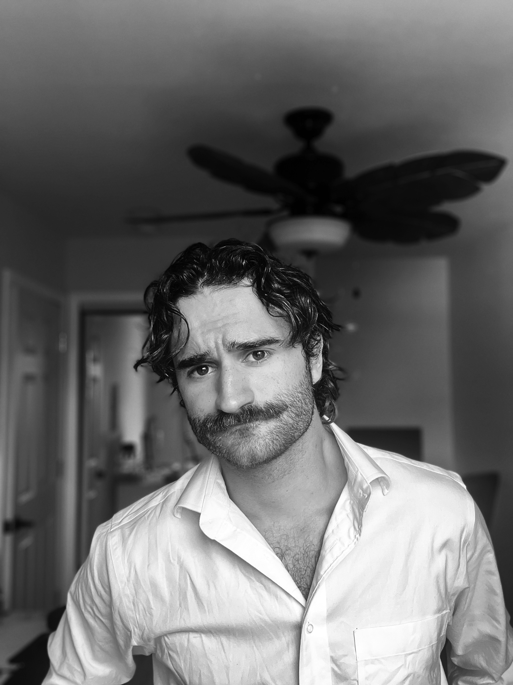
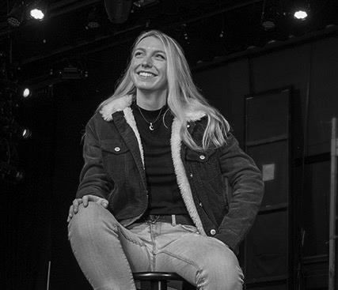
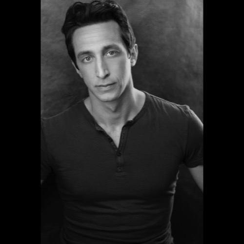
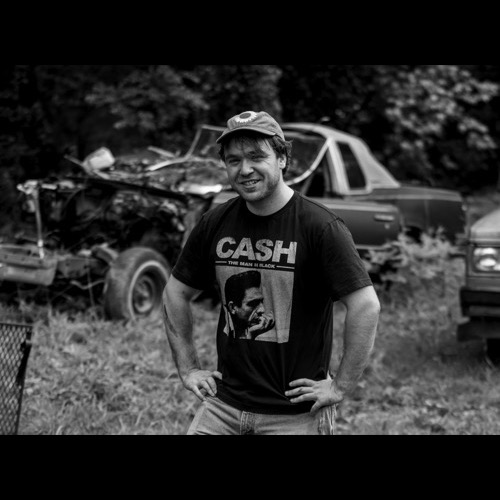
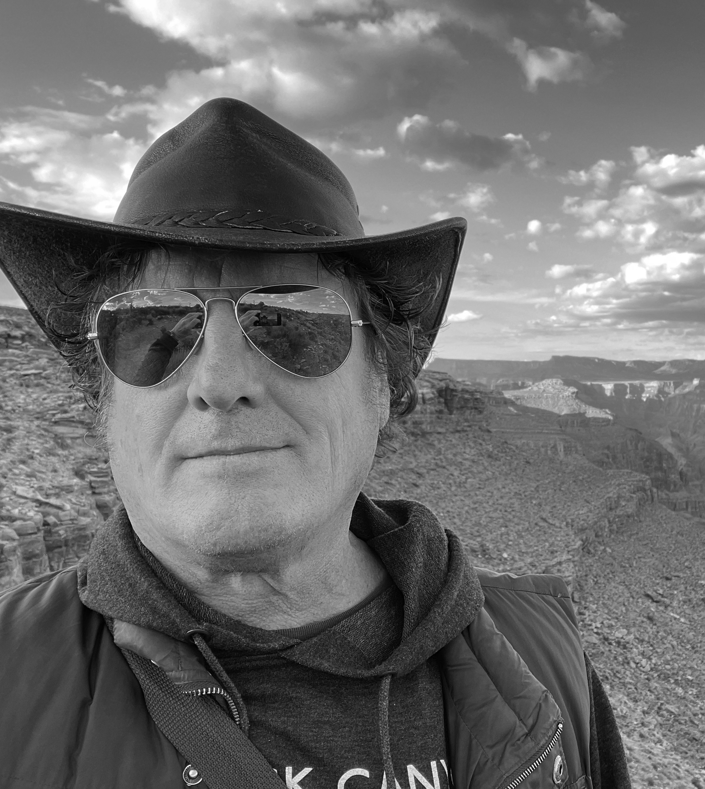

Christopher Rosica, Director
Christopher Rosica is a filmmaker whose work explores love, longing, and loss. For several years, Rosica studied under acclaimed experimental filmmaker Jeremy Moss. Rosica's most recent film, a visual poem titled "In Bloom," premiered at NY Shorts in October 2024, where it received praise for its striking imagery and haunting dialogue.

Grace Caroline Curley, Screenwriter
Grace Caroline Curley is an award-winning playwright currently based in New Orleans. Her breakout play, "Your Children Will Follow" performed at the 2023 Edinburgh Fringe Festival, where it was a recipient of four stars from The Derek Awards. Her work has been featured in the Mid-American Theatre Symposium.

Daniel Oakley, Lead
Daniel Oakley is a graduate of the prestigious Circle In The Square Acting Conservatory, which boasts alumni such as Phillip Seymour Hoffman, Kevin Bacon, and Lady Gaga. Golgotha will be the third project where Oakley and Rosica will be working together as actor and director.

Ethan Beller, Lead Producer
Ethan Beller is an Atlanta-based producer and long-time collaborator of Rosica's. With over 10 years of experience in the film industry, working every job imaginable, Ethan has developed a holistic understanding of the filmmaking process that is vital to his producing talents.

Faith Nicholas, Line Producer
She holds a degree in Broadcasting and Cinema from Oswego State University. During her time at Oswego, she worked for American High Studios, one of the most popular comedy channels on TikTok, boasting over 2.5 million followers.

Brian Mortensen, Executive Producer
Brian Mortensen is an experienced director, producer, and filmmaker whose decades of experience help guide this project. His short films have played in national and international festivals.